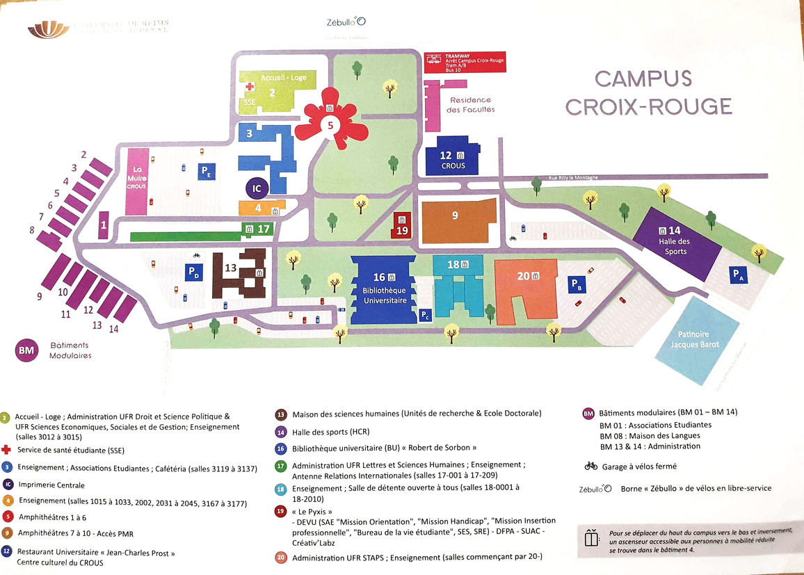
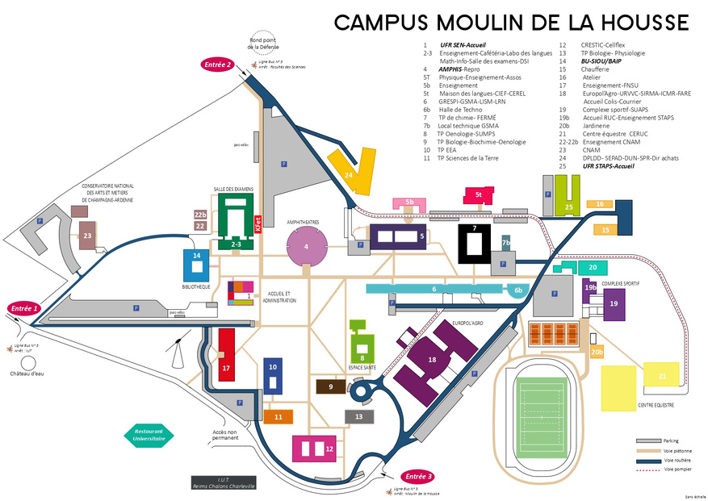

Le master
Le master SEP réunit des étudiants venus des mathématiques et de l'économie (APE). Il forme des statisticiens, data analysts et data scientists capables de dialoguer avec des non-spécialistes.
Débouchés
Data analyst, data scientist, data engineer, analytics engineer, chargé d'études statistiques, statisticien.
Il est aussi possible de poursuivre en recherche (doctorat).
Le mot des étudiants
S'installer à Reims
Le logement part vite : commencez vos recherches dès l'admission confirmée, idéalement avant l'été.
Trouver un logement
- Crous : Huit résidences dans la région, priorité aux boursiers. Demande via messervices.etudiant.gouv.fr et offres sur trouverunlogement.lescrous.fr.
- Résidences privées :
- MGEL Logement : Quai 207, Laudine, Les Bulles
- Les Estudines Drouet d'Erlon
- Le Foyer Rémois : foyer-remois.fr
- Lokaviz : portail de logements étudiants, sur lokaviz.fr
- Secteurs conseillés : centre-ville, Clairmarais, Jean-Jaurès, Cernay, Saint-Remi, Courlancy.
- Garant : si vous n'en avez pas, la garantie Visale est gratuite.
Aides financières
- Aide au logement (APL/ALS) : simulation et demande sur caf.fr, à faire dès la signature du bail.
- Bourse Crous : dossier social étudiant sur messervices.etudiant.gouv.fr.
- CVEC : à acquitter avant l'inscription sur cvec.etudiant.gouv.fr (exonération pour les boursiers).
Se déplacer
- Réseau de bus et tram : Citura (tarifs étudiants disponibles).
Santé et vie quotidienne
- Mettez à jour votre adresse auprès de l'Assurance maladie (ameli.fr) et déclarez un médecin traitant à Reims.
- Service de santé étudiant: SSE Bâtiment 20 campus Croix-Rouge et SUMPPS campus Moulin de la Housse.
Campus et vie étudiante
Les cours ont lieu sur les deux campus: campus Croix-Rouge, 57 rue Pierre Taittinger, 51100 Reims et campus Moulin de la Housse, Chem. des Rouliers, 51100 Reims.


Étudier
- Bibliothèques universitaires (horaires et services) :
- BU Robert de Sorbon, campus Croix-Rouge
- BU Moulin de la Housse, campus Moulin de la Housse
- BU Santé, 51 rue Cognacq-Jay
- BU Reims Éducation (INSPÉ)
- Impression et scan disponibles dans les BU, payables avec Izly
- Médiathèques de la ville (bm-reims.fr) :
- Médiathèque Jean Falala, 2 rue des Fuseliers
- Médiathèque Croix-Rouge, 19 rue Jean-Louis Debar
- Médiathèque Laon-Zola, 2 rue de la Neuvillette
- Bibliothèque Carnegie, 2 place Carnegie
- Bibliothèque Saint-Remi, 19 esplanade des Capucins
- Bibliothèque Chemin Vert, 12 avenue de l'Yser
Associations
Liste complète dans l'annuaire des associations étudiantes de l'URCA.
Prérequis des cours
M1 parcours maths
Voir les prérequis (lien datacamp)M1 parcours APE
Voir les prérequis (lien datacamp)Logiciels à installer
Installez ces logiciels avant la rentrée. Les étapes dépendent de votre système (Windows, macOS ou Linux).
Pour les maths
MATLAB
Logiciel de calcul numérique et de programmation scientifique.
- Windows, macOS, Linux : créez un compte MathWorks puis téléchargez l'installateur sur mathworks.com/downloads.
- Sans installation : MATLAB Online, dans le navigateur.
Pour tout le monde
R
Langage de programmation pour la statistique et la data science.
- Windows : sur cran.r-project.org, choisissez « Download R for Windows » puis « base », et lancez l'installateur. Installez ensuite Rtools, dans la version correspondant à votre R.
- macOS : téléchargez le fichier
.pkgsur cran.r-project.org (version Apple Silicon ou Intel selon votre Mac) et suivez l'installateur. - Linux : installez R avec le gestionnaire de paquets, en suivant les instructions CRAN de votre distribution.
RStudio
Environnement de travail pour R (à installer après R). Gratuit, il gère aussi R Markdown et Quarto.
- Windows, macOS, Linux : téléchargez RStudio Desktop sur posit.co/download/rstudio-desktop.
Power BI
Outil de Microsoft pour créer des tableaux de bord et visualiser des données.
- Windows : téléchargez Power BI Desktop sur microsoft.com.
- macOS et Linux : Power BI Desktop n'existe pas. Utilisez la version en ligne, Power BI Service, qui a moins de fonctionnalités.
Excel
Tableur de Microsoft, utile pour manipuler rapidement des données et faire des tableaux croisés dynamiques.
- Windows et macOS : installez Microsoft 365 depuis office.com.
- Linux : utilisez la version en ligne sur office.com.
Git (Git Bash)
Outil de gestion de versions, utilisé pour les projets de groupe. En cours, on l'utilise avec Git Bash, un terminal pour taper les commandes Git. Installez R et RStudio avant Git.
- Windows :
- Installez d'abord l'éditeur de texte Notepad++.
- Téléchargez Git sur git-scm.com/downloads. Pendant l'installation, choisissez Notepad++ comme éditeur de texte associé à Git. Git Bash est installé avec Git.
- Dans RStudio, utilisez Git Bash comme terminal :
Tools>Global Options...>Terminal, puis choisissezGit Bashdans le champNew terminals open with.
- macOS et Linux : Git Bash n'est pas nécessaire, le Terminal (bash ou zsh) accepte les mêmes commandes.
Installez Git depuis git-scm.com/downloads,
puis choisissez nano comme éditeur :
git config --global core.editor "nano" - Configuration (tout le monde) : dans le terminal, tapez
git config --global user.name "Prénom Nom"git config --global user.email "mon.adresse@mail.com" - GitLab de l'URCA : les projets du master sont hébergés sur le serveur GitLab des départements de maths et d'informatique (gitlab-mi.univ-reims.fr). Connectez-vous une première fois avec vos identifiants de l'université (CAS).
Environnement Python (Anaconda / VS Code)
Python est le langage de base de la data science et du machine learning.
- Anaconda (Windows, macOS, Linux) : installe Python avec les principales bibliothèques (pandas, numpy, scikit-learn) et Jupyter. Téléchargement sur anaconda.com/download.
- VS Code (Windows, macOS, Linux) : éditeur de code, sur code.visualstudio.com. Ajoutez ensuite les extensions « Python » et « Jupyter ».
DBeaver
Logiciel pour se connecter à des bases de données et écrire des requêtes SQL.
- Windows, macOS, Linux : téléchargez la version gratuite (Community Edition) sur dbeaver.io/download.
Docker
Outil pour lancer des applications dans des « conteneurs », avec le même environnement sur toutes les machines.
- Windows : installez Docker Desktop. Il demande d'activer WSL 2, l'installateur vous guide.
- macOS : installez Docker Desktop (version Apple Silicon ou Intel).
- Linux : installez Docker Engine en suivant la documentation officielle.
Matériel
Un ordinateur portable
Indispensable pour suivre les cours et installer les logiciels.Pas d'ordinateur ?
Les BU prêtent des ordinateurs portables. Faites la demande dès la rentrée : le nombre d'ordinateurs est limité. Voir les conditions d'empruntCaméra et micro
Vérifiez qu'ils fonctionnent : certains cours ont lieu en ligne.Infos utiles
Stages et alternances
Préparer sa candidature
- Un CV à jour
- Un compte GitHub qui sert de portfolio : vous pouvez y mettre tous les projets réalisés pendant le master
Quand chercher ?
- Alternance : dès janvier du M1
- Stage : dès septembre du M2
Livret de stage
(lien).Pensez au réseau du master : contactez les anciens étudiants pour demander de l'aide ou des offres de stage et d'alternance.
Checklist d'arrivée
Cochez au fur et à mesure : vos cases restent enregistrées dans votre navigateur.
Avant l'arrivée
Première semaine
Premier mois
Contacts utiles
Pour la formation
| Contact | Rôle | Coordonnées |
|---|---|---|
| Emmanuelle Gautherat | Responsable pédagogique du parcours SEP | emmanuelle.gautherat@univ-reims.fr |
| Jules Maes | Responsable pédagogique du parcours SEP | jules.maes@univ-reims.fr |
| Philippe Regnault | Responsable pédagogique du parcours SEP | philippe.regnault@univ-reims.fr |
| Manon Desse | Secrétaire du diplôme en SESG en économie | Tél : 03 26 91 38 45 manon.desse@univ-reims.fr |
| UFR Sciences Économiques, Sociales et de Gestion (SESG) | Secrétariat | Tél : 03 26 91 38 26 info.sesg@univ-reims.fr |
| UFR Sciences Exactes et Naturelles | Secrétariat | Tél : 03 26 91 34 19 scolarite.sciences@univ-reims.fr |
Autres
| Contact | Adresse | Coordonnées |
|---|---|---|
| Assurance Maladie (CPAM) | 4 rue du Ruisselet, 51086 Reims | Appel gratuit : 3646 |
| Caisse d'Allocations Familiales (CAF) | 202 rue des Capucins, 51086 Reims | Appel gratuit : 3230 |
| Action Logement | 2 place Paul Jamot, 51100 Reims | Appel : +33 3 53 13 00 59 actionlogement.fr/reims |
| Numéros d'urgence | 15 (Samu) · 17 (Police) · 18 (Pompiers) · 112 (Europe) | ameli.fr Liste des numéros d'urgence |
| Service de renseignement administratif | Appel gratuit : 3939 |